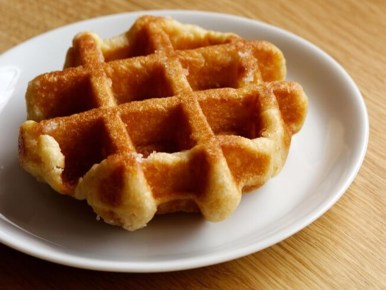

The ingredients:
- 2 Chicken eggs
- 100 gr. of Butter
- 100 gr. of Sugar
- 250 gr. of Flour
- 1 tsp. of Baking powder
- Half tsp. of Vanillin
The process:
- Beat eggs with sugar and vanilla
- Add oils and baking powder
- Whisk
- Add Flour and Milk
- Whisk
- Pour everything into the waffle iron
The result:
